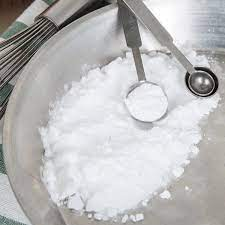
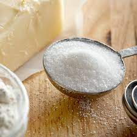
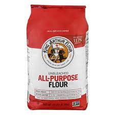

| Ingredient Name | Amount | Picture |
|---|---|---|
| Bananas | 2 to 3 | |
| Butter | 1/3 cup | |
| Baking Soda | 1/2 teaspoon |  |
| Sugar | 1 pinch |  |
| Egg | 1 | |
| Vanilla Extract | 1 teaspoon | |
| All-purpose Flour | 1 1/2 cups |  |
| Preheat the oven to 350°F (175°C), and butter a 4x8-inch loaf pan.
In a mixing bowl, mash the ripe bananas with a fork until completely smooth. Stir the melted butter into the mashed bananas. Mix in the baking soda and salt. Stir in the sugar, beaten egg, and vanilla extract. Mix in the flour. Pour the batter into your prepared loaf pan. Bake for 50 minutes to 1 hour at 350°F (175°C), or until a toothpick or wooden skewer inserted into the center comes out clean. A few dry crumbs are okay; streaks of wet batter are not. If the outside of the loaf is browned but the center is still wet, loosely tent the loaf with foil and continue baking until the loaf is fully baked. Remove from oven and let cool in the pan for a few minutes. Then remove the banana bread from the pan and let cool completely before serving. Slice and serve. (A bread knife helps to make slices that aren't crumbly.)Wrapped well, the banana bread will keep at room temperature for 4 days. For longer storage, refrigerate the loaf up to 5 days, or freeze it. |
||